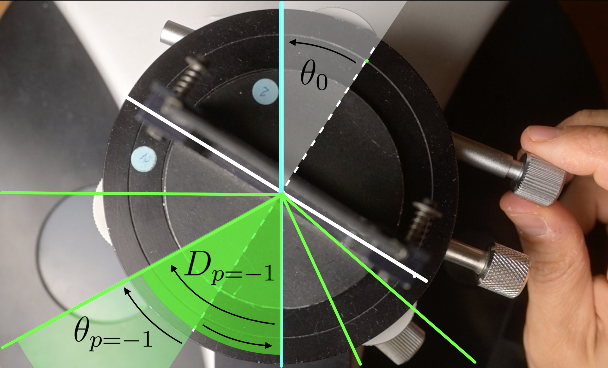

Le spectromètre à réseau
I - Mesurer des angles pour déterminer des longueurs d’onde
Approche expérimentale 2
Dans cette nouvelle configuration, le réseau est placé sur un plateau. En faisant tourner le plateau, on peut faire varier l’angle sous lequel le réseau est éclairé.
Le réseau est éclairé par le faisceau quasiment monochromatique d’un laser.
 On fait varier l’angle d’incidence \(\theta_0\) en faisant tourner le réseau sur
le plateau de bois. Pour une tâche de diffraction donnée, l’angle de
déviation \(D\) passe par un minimum
\(D_{min}\).
On fait varier l’angle d’incidence \(\theta_0\) en faisant tourner le réseau sur
le plateau de bois. Pour une tâche de diffraction donnée, l’angle de
déviation \(D\) passe par un minimum
\(D_{min}\).
Plus précisément, on fait varier l’angle d’incidence \(\theta_0\) de manière monotone entre zéro et 90 degrés puis de nouveau de manière monotone entre 90 degrés et zéro.
La tâche centrale reste immobile quel que soit l’angle d’incidence ; elle correspond à la partie de la lumière qui n’est pas déviée par le réseau.
En revanche, les autres tâches de diffraction se rapprochent de la tâche centrale puis s’en éloignent. Autrement dit, leur distance à la tâche centrale passe par un minimum.
2 - La formule fondamentale du réseau
La formule fondamentale du réseau, dont nous admettrons la validité dans une première approche, permet de déterminer les directions dans lesquelles on peut trouver les maxima d’éclairement, en fonction des autres grandeurs pertinentes.
\[ \sin(\theta)- \sin(\theta_0)=p\frac{\lambda}{a}\]
Dans la formule du réseau, les angles sont repérés par rapport à la normale \((N)\) au réseau.
\(\theta_0\) représente l’angle d’incidence, angle sous lequel arrive la lumière issue du collimateur sur le réseau. Bien noter que cet angle est repéré par rapport à la normale (N) au réseau ;
p est l’ordre d’interférence considéré. C’est un entier relatif qui nous permet de numéroter les différentes images de la fente source d’une même couleur, les différentes raies du même vert par exemple ;
 Cas particulier de la composante verte de la lampe
spectrale à vapeur de mercure. On considère l’image de la fente source à
l’orde \(p=-1\). C’est l’image que l’on
peut observer à l’angle \(\theta_{p=-1}\) repéré par rapport à la
normale \((N)\) au réseau.
Cas particulier de la composante verte de la lampe
spectrale à vapeur de mercure. On considère l’image de la fente source à
l’orde \(p=-1\). C’est l’image que l’on
peut observer à l’angle \(\theta_{p=-1}\) repéré par rapport à la
normale \((N)\) au réseau.
\(\theta_p\) représente l’angle sous lequel on peut repérer l’image de la fente source d’ordre p de la couleur considérée. Cet angle est également défini par rapport à la normale \((N)\) au réseau ;
\(a\) est une grandeur qui caractérise le réseau particulier que l’on a utilisé. C’est la distance entre deux gravures successives (réseau = grating in english) ou pas du réseau. Elle est de l’ordre du micromètre. Dans la pratique, c’est l’inverse du pas qui est indiqué sur l’objet, le nombre de traits par unité de longueur, 300 traits par mm dans notre exemple.
 L’indication \(300\)
traits par mm permet de calculer une estimation de la valeur du pas du
réseau.
L’indication \(300\)
traits par mm permet de calculer une estimation de la valeur du pas du
réseau.
- \(\lambda\), enfin, est la longueur d’onde dans l’air du rayonnement considéré. Elle caractérise quantitativement la couleur de la raie. Dans notre exemple, la raie verte de la lampe à vapeur de Mercure possède une teinte absolument singulière, caractérisée par la longueur d’onde 576 nm.
Angle de déviation D
Pour \(p=0\), on peut remarquer que la formule fondamentale du réseau se réduit à : \[ \sin(\theta) = \sin(\theta_0)\] \[\theta = \theta_0\]
Une partie de la lumière incidente n’est donc pas du tout déviée, quel que soit l’angle d’incidence et quelle que soit la longueur d’onde.
L’image de la fente d’ordre zéro, que l’on peut voir directement dans l’axe du collimateur, a donc la même couleur que le mélange directement issu de la source.
En pratique, nous allons repérer les différentes raies colorées par rapport à cet ordre zéro, direction que l’on peut viser à la lunette, plutôt que par rapport à la normale \((N)\) au réseau, qui est une direction dans laquelle on ne peut pas voir de lumière.
On considèrera donc, dorénavant, la déviation \(D_p\) d’une raie colorée, grandeur mesurable, plutôt que son angle de sortie \(\theta_p\) tel qu’il est défini dans la mise en place théorique de la formule fondamentale du réseau.
Par construction, il vient : \[ D_p=\theta_p-\theta_0 \]
 \(\theta_p\), mesuré
par rapport à la normale \((N)\) est
l’angle tel que définit dans la mise en place théorique. En pratique, on
repère les angles par rapport à l’ordre zéro, et on définit l’angle de
déviation \(D_p\).